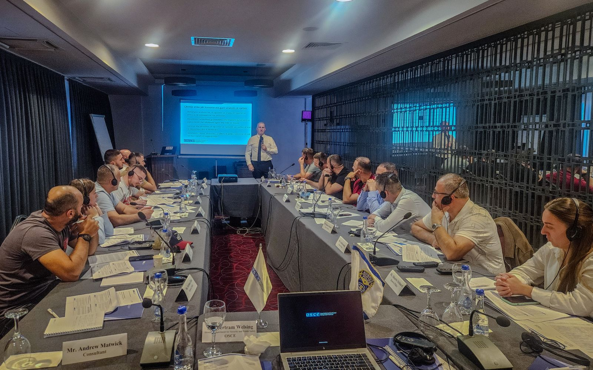
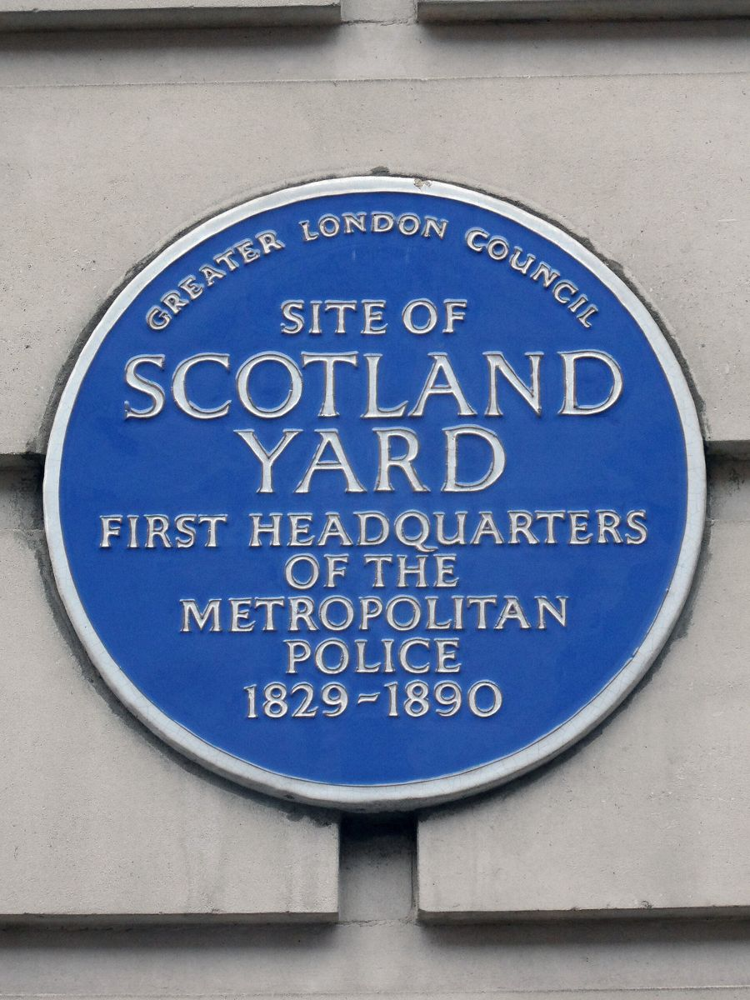
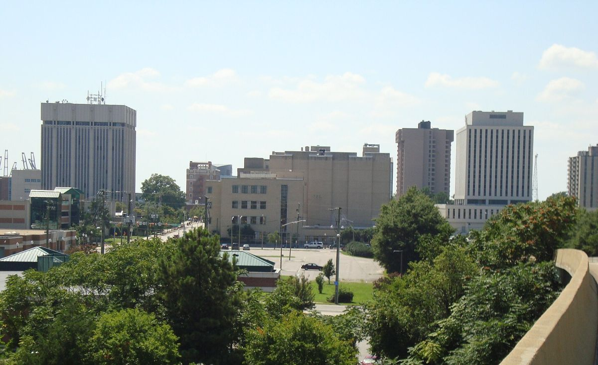
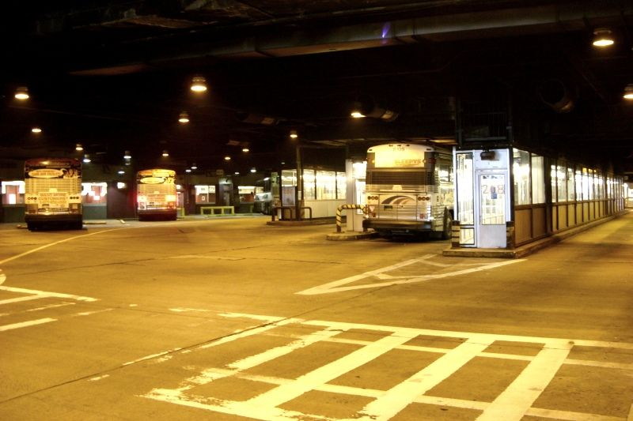
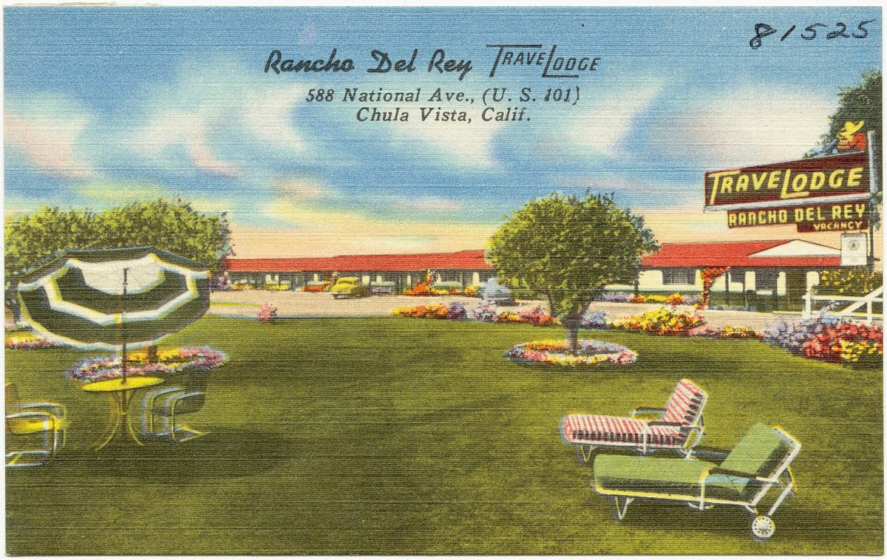
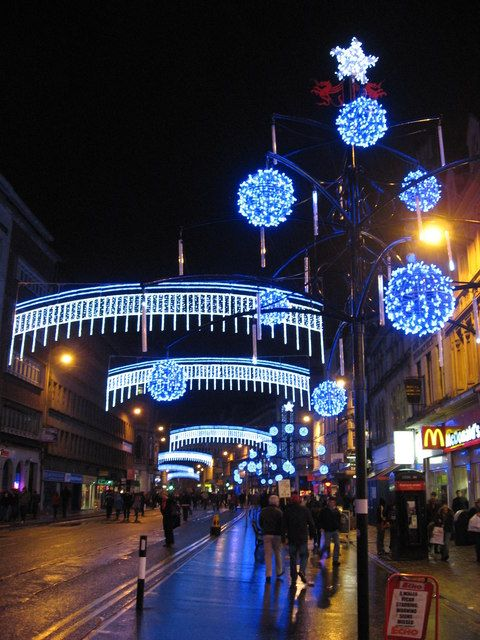
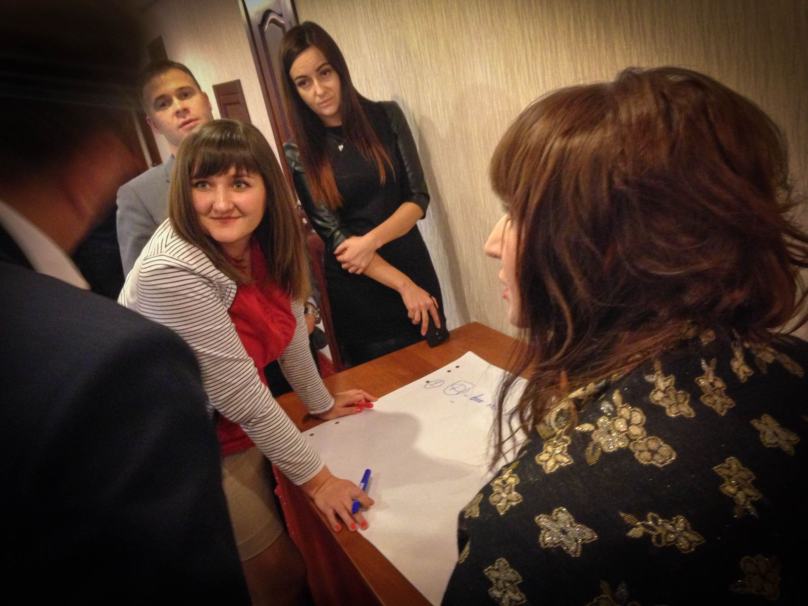
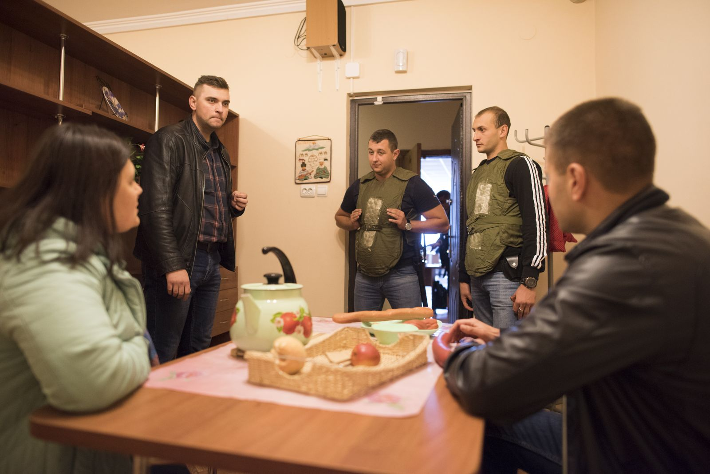

Проблемно-орієнтована поліцейська діяльність (POP) — це метод, а не лозунг. Поліцейський бере не окремий виклик, а проблему, що повторюється: точно описує її, з'ясовує, чому вона виникає саме тут, змінює умови разом із тими, хто ними розпоряджається, і перевіряє, чи стало менше шкоди.
Це метод
Чотири кроки SARA: сканування, аналіз, відповідь, оцінка. Карта робить перший крок — показує, що й де повторюється.
Він доведено працює
34 суворі оцінки з різних країн: у середньому на третину менше злочинів і безладу, ніж у порівняльних місцях; 31 з 34 — на користь методу.
У світі це стандарт
Велика Британія, США, Канада, Скандинавія працюють так десятиліттями. В Україні є офіцери громади, але немає системного навчання аналізу.
Почати можна зараз
Справжня проблема з карти, група слухачів, партнер, що розпоряджається місцем, і чесна оцінка до/після.
Як читати. Слухачеві — частина I (кроки й рубрика) і частина III (кейси). Викладачеві й тим, хто хоче глибше, — частина II (теорія й докази) і IV (Україна, типові провали).
Частина I. Як досліджувати проблему
Для чого цей посібник
Цикл SARA (Ек і Спелман, Ньюпорт-Ньюс, 1987). Кожен крок дає матеріал наступному; оцінка може повернути до аналізу.
Карта показує, де і що повторюється. Це лише перший крок із чотирьох. Посібник учить решти: як з'ясувати, чому саме тут, що змінити, з ким і як довести, що спрацювало.
Мірка якості — критерії премії Германа Гольдштейна, головної світової нагороди за проблемно-орієнтовану роботу поліції. Журі зважує аналіз, відповідь і оцінку сильніше, ніж сканінг і подачу (критерії). Тобто «знайшли на карті й запропонували» — це ще не дослідження.
«15 з 20 подій за одним сценарієм о такій-то годині» — добрий сканінг і опис, але не аналіз. Аналіз починається, коли ви відповідаєте, чому тут, а не на сусідньому такому самому місці, і ця відповідь змінює те, що робитимуть поліція й партнер.
1. Сканінг — чи це справді проблема

Аналітики поліції Косова на навчанні ОБСЄ з кримінального аналізу, 2025. Фото: OSCE, CC BY-ND 4.0
Карта вже зробила частину роботи: на ній лише місця, де однакова картина повторилася щонайменше 5 разів у 3 різних кварталах. Слухач перевіряє чотири речі, перш ніж братися за аналіз.
Що саме повторюється? Сформулюйте одним реченням, без статті кодексу: «на внутрішньому перехресті парковки водії не пропускають тих, хто їде головним проїздом», а не «ДТП за ст. 124». Джерело — фабули в картці місця (вкладка «Рішення»).
Чи це шкода, а не лише робота поліції? Є постраждалі, пошкоджене майно, травми? Якщо події лише виявила сама поліція (куріння, рейди), це радше про те, де працює патруль. Орієнтир — «дні шкоди» в «Дослідженнях».
Хто ще вважає це проблемою? За критеріями Гольдштейна проблема має бути значущою і для поліції, і для хоча б частини громади. Перевірте скарги 1551 у картці місця, відгуки на місце, запитайте власника.
Чи не вада даних? Адреса події взята з тексту суду, а він не завжди точний. Якщо місце — суд, відділення поліції чи місце складання протоколу, це не проблема. Прочитайте 5–6 фабул самі.
Результат сканінгу — один абзац: що, де, скільки разів і з якого часу, яка шкода і для кого.
2. Аналіз — чому саме тут
Трикутник проблеми (Кларк і Ек). Усередині — що сходиться в події; зовні — хто здатний вплинути на кожну сторону.
Мета аналізу — гіпотеза, яку можна перевірити й з якої випливає дія. Сім кроків йдуть по черзі; кожен дає частину відповіді. За критеріями Гольдштейна добрий аналіз ставить питання з кількох боків, бере різні джерела й дослідження і змінює розуміння проблеми.
Сценарій покроково. З 6–10 фабул запишіть, як відбувається подія від початку до кінця: підготовка → підхід → дія → відхід. На кожному кроці запитайте: що тут можна ускладнити або зробити помітним? Крок, через який проходять усі випадки, — вузьке місце: там втручання найдешевше.
Трикутник. Що повторюється: місце (різні люди, те саме місце), порушник (та сама особа чи група) чи ціль (той самий потерпілий чи предмет)? Для кожного боку запишіть, хто на нього впливає: господар місця, хто охороняє ціль, хто має вплив на порушника. Ці люди — ваші майбутні партнери.
Дзеркало — головний крок. Знайдіть 3–5 таких самих місць, де проблеми немає: інші парковки тієї ж мережі, інші виходи метро, інші філії магазину (сторінка «Схожі умови» допоможе). Що в проблемному місці інакше — те й є гіпотеза. Без цього кроку «причина» — лише здогад.
Час. Години, дні тижня, місяці: відкриття магазину, закінчення уроків, зміна охорони? Час підказує, коли діяти і хто цей час контролює.
Шкода й вартість. Скільки днів шкоди, судових справ, виїздів патруля, збитків потерпілих. Аргумент «ця проблема коштує стільки» переконує партнера сильніше за «тут багато подій».
Польовий огляд. Гіпотеза перевіряється на місці, а не за комп'ютером: фото, заміри, одна година спостереження з підрахунком (скільки водіїв не пропустили, скільки сумок без нагляду), розмова з охороною чи адміністратором. Той самий огляд — на одному «дзеркальному» місці.
Що кажуть дослідження. Знайдіть посібник POP Center на ваш вид проблеми або огляд досліджень (посилання — у «Що робити» на сайті та в кінці посібника). Напишіть два речення: чи підтверджує воно вашу гіпотезу і що спрацювало деінде.
Результат аналізу — речення за формулою: «Події X відбуваються тут, бо Y; на схожих місцях Y немає і подій у N разів менше; на місці ми це побачили так: …». Слово «бо» тут — гіпотеза, яку підтвердить або спростує оцінка.
3. Відповідь — що змінити і з ким
Поліцейські Косова на семінарі ОБСЄ про запобігання злочинам разом із громадою, Приштина, 2022. Фото: OSCE/Mevlyde Salihu, CC BY-ND 4.0
Відповідь має випливати з вашої гіпотези, а не зі звичного «посилити патрулювання». Джерело ідей — 25 технік ситуативного запобігання (Корніш і Кларк, 2003), згруповані в п'ять питань. Таблиця показує, як кожне питання звучить для наших типових київських проблем.
захист «гарячих товарів» (алкоголь, косметика) бирками
значок «речі з мітками» для пасажирів
—
Зменшити провокації
чітка черговість — менше суперечок
—
—
скупчення й черги прибрати, місця для сидіння на видноті
Прибрати виправдання
знак «Стоп» замість самої розмітки
«крадіжка — кримінал, воєнний стан» біля виходу
оголошення «не залишайте речі»
правила на вході, смітники, вбиральні
Як обрати:
Випишіть 3–5 варіантів. Для кожного: скільки коштує, хто робить, чи спрацьовувало деінде, чи не перемістить проблему на сусіднє місце.
Оберіть 1–2 і поясніть, чому саме їх. За критеріями Гольдштейна це обов'язково: кілька варіантів і чому одні так, а інші ні.
Відповідь має бути справедливою: не витісняти бідних чи підлітків «кудись», а міняти умови.
Партнер — той, хто керує місцем або може зробити обране: адміністрація ТРЦ, мережа, Укрзалізниця, КП чи райадміністрація. Лист від групи через Академію — на одну сторінку:
Що ми помітили: цифра, місце, період, одне речення про сценарій.
Чому це важливо саме для партнера: збитки, клієнти, репутація.
Що ми перевірили на місці і чим це місце відрізняється від схожих.
Що пропонуємо — одна конкретна дія й її ціна.
Як ми разом зміряємо результат і коли повернемося з цифрами.
4. Оцінка — як довести, що спрацювало
План оцінки пишуть до початку змін, інакше немає «до», з яким порівнювати. Судові рішення з'являються з запізненням у кілька місяців, тому потрібна ще й міра, яку ви знімаєте самі.
Міра власними очима. Одна година спостереження в одні й ті самі день тижня і час до змін і після: скільки водіїв не пропустили, скільки сумок без нагляду, скільки людей п'ють на майданчику. Два–три спостереження «до» дають надійнішу базу.
Дані партнера. Журнал охорони, скарги клієнтів, втрати магазину. Домовтеся про це в першому ж листі.
Судові рішення на карті. Порівняйте події сценарію за 6–12 місяців після змін із таким самим періодом до. Це найповільніша, але найнезалежніша міра.
Контрольне місце. Одне з «дзеркальних» місць, де нічого не міняли, заміряне так само. Якщо покращилось скрізь однаково, це не ваша заслуга.
Переміщення. Подивіться на сусідні місця: чи не перебралась проблема туди. Частіше буває навпаки — покращується й поруч, і це теж варто записати.
Невдача — теж результат. Якщо захід не подіяв, опишіть чесно, що пішло не так, і поверніться до аналізу: це саме те, що робить SARA циклом.
Парковка «Епіцентру», Кільцева 1-Б: ДТП за одним сценарієм, за рішеннями судів (з карти).«Дзеркало»: такі самі зіткнення на інших парковках тієї ж мережі за той самий час. Різниця — у 6–13 разів.
Реальна проблема з карти. Приклад уже пройшов сканінг і початок аналізу за даними; польовий огляд і все, що після нього, — робота для групи. Академія — приблизно 5 км по прямій.
Сканінг. На одному перехресті проїздів усередині парковки суди розглянули 108 ДТП за одним сценарієм: водій не виконує розмітку 1.13 «дати дорогу» і б'є авто на головному проїзді. За роками: 54 у 2024, 30 у 2025, 24 за десять місяців 2026. Шкода — пошкоджені авто клієнтів, затрати на страхування, час патрульних і судів.
Аналіз — що вже видно з даних:
Сценарій: виїзд з другорядного проїзду → черговість позначена лише розміткою на асфальті → водій їде далі → зіткнення. Вузьке місце — момент, коли водій має зрозуміти, що їде другорядною.
Трикутник: повторюється місце (водії різні). Хто керує місцем — адміністрація торгового центру.
Дзеркало: на інших парковках цієї ж мережі таких зіткнень у 6–13 разів менше: Берковецька 6-В — 8, «Лавіна» — 16, Полярна 20-Д — 17. Отже, справа не в мережі чи клієнтах, а в плануванні саме цього перехрестя — це гіпотеза.
Час: переважно з полудня до вечора, тобто тоді, коли на парковці найбільше авто.
Що перевірити на місці: чи видно розмітку 1.13 (стерлась?); чи є знаки; чи не засліплюють стійки, реклама, припарковані авто; чи схожий головний проїзд на головний. Одна година спостереження в суботу з 15:00: скільки авто проїжджають перехрестя і скільки з них не пропускають. Те саме — на парковці на Берковецькій.
Можлива відповідь (чернетка, до огляду): знак 2.2 «Стоп» або 2.1 з табличкою; стоп-лінія й свіжа розмітка; штучна нерівність перед виїздом з другорядного; дзеркало; або односторонній рух на одному з проїздів. Усе — дешево й у власності одного господаря. Обрати можна лише після огляду.
Оцінка: спостереження до і після в однаковий час; контроль — Берковецька; судові рішення за півроку після змін проти півроку до (зараз — приблизно 12–15 за півроку); дані охорони про зіткнення.
6. Рубрика: як оцінити проєкт групи
Рубрика побудована на критеріях премії Гольдштейна з тим самим акцентом: аналіз, відповідь і оцінка важать більше. Разом 100 балів. Проєкт, що набрав 80+, варто подавати на саму премію.
Етап
Балів
Слабко
Добре
Відмінно
Сканінг
10
«тут багато подій»
сценарій одним реченням, цифра й період
ще й доказ шкоди та того, що це важливо для громади
Аналіз
30
переказ картки з карти
сценарій покроково й трикутник
дзеркало, польовий огляд, дослідження; гіпотеза, що змінила розуміння
Відповідь
25
«посилити патрулювання»
захід випливає з гіпотези, є партнер
3–5 варіантів і чому обрано цей; лист надіслано; справедливо
Оцінка
25
«стало краще» без цифр
замір до і після
кілька мір, контрольне місце, перевірка переміщення
Подача
10
слайди з текстом
чітка структура SARA
таблиці, фото з огляду, підсумок на одній сторінці
Роботу групи (PDF) кладіть у теку розборів: аналітик сам прив'яже її до проблеми на карті й звірить числа.
Частина II. Наукова база своїми словами
Нижче — виклад ключових зарубіжних робіт українською, нашими словами і з київськими прикладами. Це не переклади: цифри досліджень звірені з оригіналами, а самі оригінали — у розділі «Що читати».
II.1. Звідки взялася проблемно-орієнтована поліцейська діяльність
Від ідеї запобігання 1829 року до доказів 2020-го. Між 1829 і 1979 поліція світу здебільшого перейшла на реагування. Події — рівним кроком, не в масштабі років.

Табличка на місці першої штаб-квартири Столичної поліції Лондона (1829–1890). Фото: Spudgun67, CC BY-SA 4.0, Wikimedia Commons
Герман Гольдштейн і «хвороба засобів». У 1979 році американський професор права Герман Гольдштейн (Університет Вісконсину) опублікував статтю «Покращення поліцейської діяльності: проблемно-орієнтований підхід». Його головна думка проста й досі незручна: поліція так захопилася тим, як вона працює — швидкістю реагування, кількістю патрулів, затримань і протоколів, — що перестала питати, чи стало від цього менше проблем, заради яких її взагалі тримають. Гольдштейн назвав це «синдромом засобів понад цілі»: організація вдосконалює власну машину, а не результат для людей. У 1990 році він розгорнув цю ідею в книжці «Проблемно-орієнтована поліцейська діяльність», яка й дала назву підходу.
Що він запропонував натомість. Одиницею роботи має бути не окремий виклик, а проблема — група схожих подій, які повторюються в одному місці, з однією категорією людей або в один час і які громада вважає шкідливими. Поліцейський, який двадцятий раз їде на бійку біля того самого бару, виконує свою роботу «правильно», але проблема від цього не зменшується. Гольдштейн вимагав трьох речей: (1) об'єднувати події в проблеми; (2) глибоко аналізувати, чому саме тут і саме так; (3) шукати відповідь ширше, ніж кримінальне право, — разом із власниками, комунальниками, школами, мешканцями, — і перевіряти, чи вона спрацювала.
Дві моделі поруч.
Стандартна модель
Проблемна модель
Одиниця роботи
окремий виклик, протокол
повторювана проблема
Головне питання
хто винен у цьому випадку
чому це повторюється тут
Головні засоби
патруль, реагування, покарання
будь-які законні засоби, частіше — зміна середовища
Хто діє
поліція
поліція разом із тими, хто керує місцем чи ресурсом
Мірило успіху
кількість затримань, час прибуття
чи поменшало шкоди

Ньюпорт-Ньюс (Вірджинія), де 1984–1986 народилася модель SARA. Фото: Etombari, CC BY-SA 3.0, Wikimedia Commons
Ньюпорт-Ньюс і поява SARA. Щоб перевірити ідею на практиці, Форум керівників поліції США (PERF) у 1984–1986 роках разом із поліцією міста Ньюпорт-Ньюс (штат Вірджинія) провів пілот. Його описали Джон Ек і Вільям Спелман у звіті 1987 року. Саме там з'явилася схема з чотирьох кроків — Сканування, Аналіз, Відповідь, Оцінка (SARA), — щоб звичайний патрульний міг пройти шлях від «тут щось не так» до перевіреного результату без наукового ступеня. Найвідоміший кейс пілоту — квартал старих багатоквартирних будинків, де трималися квартирні крадіжки: аналіз показав, що справа в покинутих і занедбаних помешканнях і в тому, що ніхто не відповідав за стан будинків; відповідь поєднала роботу з власником, ремонт і зрештою відселення — крадіжок там різко поменшало. Інший кейс — крадіжки з автомобілів на величезній парковці суднобудівного заводу, де розв'язок знайшли через роботу з адміністрацією парковки, а не через засідки.
Що з того вийшло. Підхід поширився у США, Великій Британії, Австралії, Скандинавії. З 1993 року щороку вручається премія Германа Гольдштейна за найкращий проєкт; працює Центр проблемно-орієнтованої поліцейської діяльності (popcenter.org) — бібліотека з понад сотнею посібників за типами проблем. Про ці посібники й переможців — розділи II.8 і II.10.
Що це означає для нашої карти. Карта — інструмент першого кроку SARA: вона групує тисячі окремих рішень суду в повторювані місця і показує, де «двадцятий виклик до того самого бару». Але вона не відповідає на питання «чому» — це робить людина на місці (розділ 2 посібника), — і не замінює оцінку (розділ 4).
II.2. Три теорії, на яких стоїть підхід
Проблемно-орієнтований підхід не вигадує нової кримінології. Він спирається на три пов'язані теорії, які разом називають кримінологією середовища. Їхня спільна думка: щоб зменшити кількість подій, не обов'язково змінювати людину — часто досить змінити обставини, за яких подія стається.
Теорія рутинної активності (Коен і Фелсон, 1979)
Лоуренс Коен і Маркус Фелсон звернули увагу на парадокс: після Другої світової війни в США зростали доходи й освіта, а квартирних крадіжок теж ставало більше. Пояснення вони знайшли не в «зіпсованості» людей, а в способі життя. Більше жінок вийшло на роботу — вдень більше порожніх квартир. Побутова техніка стала легшою й дорожчою — більше вигідних цілей. Звідси формула: подія стається, коли в одному місці й в один час сходяться три речі — мотивований правопорушник, придатна ціль і відсутність здатного захисника. Прибери будь-що одне — події не буде.
Київський приклад. Крадіжки телефонів біля станцій метро о 23:00–00:30: багато людей у навушниках і з телефоном у руці (ціль), мало перехожих і зачинені кіоски (немає захисника), а ті, хто краде, знають, де й коли це зручно.
Теорія раціонального вибору (Корніш і Кларк, 1986)
Дерек Корніш і Рональд Кларк у книжці «Розважливий правопорушник» запропонували дивитися на правопорушення як на рішення. Людина не обов'язково все зважує холодно, але вона приблизно оцінює зусилля, ризик і вигоду — і робить це тут і зараз, у конкретній ситуації. Звідси два висновки, важливі для нас:
Рішення залежать від конкретного виду події. Той, хто краде з авто, міркує інакше, ніж той, хто б'ється біля бару. Тому аналізувати треба не «злочинність», а дуже вузький тип проблеми.
Якщо зробити подію важчою, ризикованішою чи менш вигідною, частина людей просто відмовиться від неї. На цьому побудовано 25 технік (розділ II.4).
Теорія геометрії злочину (Брантінгеми, 1980-ті–1990-ті)
Пол і Патриція Брантінгеми з Канади пояснили, де саме сходиться трикутник. Люди рухаються між вузлами (дім, робота, навчання, розваги) звичними шляхами. Більшість правопорушень стається там, де «простір обізнаності» правопорушника перетинається з місцем, де є цілі. Вони розрізнили два типи місць:
генератори — місця, куди приходить дуже багато людей з інших причин (вокзал, великий ТЦ, ринок, стадіон); подій там багато просто через натовп;
атрактори — місця, відомі як «зручні» для певних правопорушень (нічний кіоск з алкоголем, пустир, де збуваються наркотики); сюди приходять саме заради цього.
Для карти це розрізнення важливе. Центральний вокзал (пл. Вокзальна, 1) має на карті близько 300 рішень — але через нього щодня проходять десятки тисяч людей, тож на одного відвідувача подій може бути й небагато: це генератор. Звичайний двір, де за той самий час назбиралося кілька десятків подій однієї картини, може виявитися справжнім атрактором. Тому велике число саме собою ще не означає найгіршого місця.
Трикутник проблеми і ті, хто на нього впливає
Рональд Кларк і Джон Ек звели ці теорії в робочу схему — трикутник проблеми: внутрішній трикутник — правопорушник, ціль (або потерпілий), місце. Над кожною стороною стоїть той, хто здатний вплинути:
Сторона
Хто впливає
Приклад у Києві
Правопорушник
наглядач — той, до чиєї думки людина дослухається: батьки, тренер, класний керівник, роботодавець
батьки підлітків, які збираються ввечері біля школи
Ціль / потерпілий
захисник — той, хто береже: сам власник, сусіди, охорона, перехожі
касир, який бачить зал, або консьєржка
Місце
розпорядник місця — той, хто відповідає за місце: власник магазину, управитель ОСББ, адміністрація ТЦ чи парку
власник МАФу з нічним алкоголем, КП «Київпастранс» на зупинці
Пізніше Семпсон, Ек і Данем (2010) додали надконтролерів — тих, хто впливає на самих наглядачів, захисників і розпорядників: регулятори, ліцензування, страховики, мережі-власники, ЗМІ, громада. Якщо власник МАФу не хоче змін, на нього може вплинути районна адміністрація, яка дає дозвіл на розміщення, або мережа, з якою він працює.
Практичний висновок для слухачів. Коли ви дивитеся на проблемне місце на карті, питання не «кого затримати», а «яка зі сторін трикутника найслабша і хто з шести гравців може її підсилити найдешевше». Дільничний рідко може змінити правопорушника, але майже завжди може знайти розпорядника місця.
II.3. Закономірності концентрації: чому карта взагалі працює
Уся ідея нашої карти тримається на одному факті, який підтверджується в усіх країнах, де його перевіряли: правопорушення розподілені дуже нерівномірно. У малій частині місць, об'єктів, людей і речей зосереджена велика частка всіх подій. Якби це було не так, аналіз не давав би нічого: немає сенсу «сканувати», якщо все розмазане рівно. Розрізняють чотири види концентрації.
1. Гарячі точки (місця)
Міннеаполіс, 1989 (Шерман та ін.): половина викликів — з приблизно 3% адрес. Той самий закон підтвердився в десятках міст (Вайсбурд).
У 1989 році Лоуренс Шерман і колеги проаналізували річний потік викликів поліції в Міннеаполісі й побачили, що приблизно половина всіх викликів припадала на близько 3% адрес міста. Пізніше Девід Вейсбурд зібрав дані з десятків міст і сформулював «закон концентрації злочинності»: у різних містах приблизно половина правопорушень припадає на кілька відсотків відрізків вулиць, і ці відрізки роками лишаються тими самими. Саме тому ми рахуємо події не по районах, а по адресах і відрізках: район усереднює й ховає те, що важливо.
Як це виглядає у Києві. На карті той самий патерн: декілька сотень адрес дають непропорційно велику частку рішень суду (цифри — в «Києві у цифрах» на сторінці «Дослідження»).
2. Ризиковані об'єкти
Джон Ек, Рональд Кларк і Роб Ґеретт (2007) показали: серед об'єктів одного типу — барів, магазинів біля дому, заправок, парковок, готелів, шкіл — мала частина дає більшість подій. Це важливо, бо знімає звичне виправдання «у нас такий тип закладу, тут завжди так». Якщо десять супермаркетів однієї мережі мають по 2–3 справи на рік, а один — 60, то справа не в «супермаркетах», а в тому, як керують саме цим. Автори радять порівнювати об'єкт із собі подібними і шукати різницю в управлінні: персонал, розташування кас, години роботи, політика щодо заяв до поліції.
У нашій карті це реалізовано через порівняння з медіаною об'єктів того самого типу («у N разів більше, ніж у типового»).
3. Повторна віктимізація
Той, хто вже постраждав, має набагато вищий шанс постраждати знову, і найчастіше — незабаром після першої події. Британський дослідник Кен Піз зробив з цього практичний висновок: обмежені ресурси треба вкладати туди, де вже сталося. У проєкті в Кіркхолті (Рочдейл, Англія, друга половина 1980-х) після кожної квартирної крадіжки потерпілим швидко ставили надійніші замки, забирали газові лічильники з монетами (часта ціль злодіїв) і організовували «коконне сусідство» — кілька сусідів навколо постраждалого діму дивляться за ним. За кілька років крадіжок у кварталі стало втричі-вчетверо менше.
Поруч із цим є ефект «майже повтору» (Шен Джонсон, Кейт Бауерс): після крадіжки ризик на кілька тижнів підвищується й для сусідніх будинків на відстані до кількох сотень метрів — злодій повертається туди, де вже все знає.
Для дільничного. Після крадіжки з авто чи підвалу — обійти сусідні під'їзди цього ж тижня, а не через місяць. Наші дані (рішення суду) з'являються із запізненням у місяці, тому для цього потрібні свіжі власні спостереження.
4. Гарячі товари і гарячі люди
Рональд Кларк (1999) показав, що крадуть не все підряд, а речі з певними властивостями. Іх запам'ятовують словом CRAVED: легко сховати, легко винести, доступна (лежить на виду), цінна, приємна в користуванні і легко продати. Смартфон, елітний алкоголь, сир, кава, дитяча суміш, електросамокат — типові гарячі товари. Звідси простий хід: часто дешевше захистити одну полицю з віскі, ніж увесь магазин.
Так само сконцентровані й правопорушники: у класичному дослідженні Марвіна Вольфґанга (Філадельфія, 1972) приблизно 6% хлопців з когорти вчинили більше половини всіх її правопорушень. Але цією концентрацією наша карта навмисно не займається: вона не показує осіб і не слугує для пошуку людей. Робота з повторними правопорушниками — задача процесуальних інструментів і пробації, а не відкритої карти.
Що з цим робити. У кожній проблемі спитайте себе чотири речі: яке місце тут головне; чи це об'єкт, що виділяється серед собі подібних; чи постраждалі повторюються; і чи крадуть одне й те саме. Кожна відповідь «так» звужує проблему й робить відповідь дешевшою.
II.4. 25 технік ситуативного запобігання
П'ять важелів по п'ять технік (Корніш і Кларк, 2003). Помаранчеві — додані пізніше й найчастіше забуті; саме вони про бійки й безлад.
Таблицю 25 технік уклали Дерек Корніш і Рональд Кларк (2003), розвиваючи старіші версії Кларка з 12 і 16 технік. Вона випливає прямо з теорії раціонального вибору: якщо людина зважує зусилля, ризик і вигоду, то є п'ять важелів: зробити подію важчою, ризикованішою, менш вигідною, усунути те, що її провокує, і забрати виправдання. У кожного важеля — п'ять технік.
Два застереження, які повторюють самі автори. Перше: таблиця — не меню, з якого беруть улюблену техніку, а контрольний список, щоб нічого не пропустити після аналізу. Друге: техніка працює лише проти дуже конкретної проблеми; «поставити камери» не є відповіддю на «злочинність у районі».
Приклади нижче — ілюстрації для київських умов, а не перевірені рішення; що спрацює на конкретному місці, покаже лише оцінка.
Важіль 1. Збільшити зусилля
№
Техніка
Суть
Приклад для Києва
1
Укріпити ціль
зробити саму ціль фізично твердішою
металеві двері в підвали, антивандальні замки на електрощитках, захисна плівка на вітринах
2
Контролювати доступ
пускати до місця лише тих, кому треба
домофон і замикані двері на дах, шлагбаум на дворі ОСББ, окремий вхід до складу магазину
3
Контролювати вихід
ускладнити винесення речей або вихід без оплати
антикрадіжні рамки на виході, вихід із супермаркету лише повз каси, турнікети на виході з парковки
4
Відвести правопорушників
розвести в просторі й часі тих, хто конфліктує, і тих, на кого нападають
різні виходи зі стадіону для вболівальників, розведене закінчення роботи нічних закладів на одній вулиці, щоб натовп не виходив разом
5
Контролювати знаряддя
прибрати з доступу те, чим вчиняють подію
скляний посуд замінити пластиковим у барах і на масових заходах; не продавати фарбу в балончиках неповнолітнім
Важіль 2. Збільшити ризик
№
Техніка
Суть
Приклад для Києва
6
Посилити опіку
щоб поруч були свої люди або їхні засоби
ходити ввечері в парі, лишати ввімкнене світло в квартирі, один сусід забирає пошту іншого в його відсутність
7
Природне спостереження
щоб перехожі й мешканці бачили місце
освітлення підземних переходів і доріжок до зупинок, підрізати кущі біля лавок, прозорі зупинкові павільйони
8
Зменшити анонімність
щоб людина не відчувала себе «нічиїм»
бортові номери таксі й телефон «як я їду», іменні бейджі персоналу, персональні картки для проїзду за пільгою
9
Задіяти розпорядників місця
щоб персонал і власники дивилися й реагували
другий продавець у нічну зміну в МАФі, двірник із телефоном дільничного, касир із видом на зал
10
Посилити формальне спостереження
поліція, охорона, камери, сигналізація
короткі патрулі в гарячу годину замість довгих цілодобових, камера з видом на парковку, а не на фасад
Важіль 3. Зменшити вигоду
№
Техніка
Суть
Приклад для Києва
11
Сховати ціль
щоб цінне не було видно
не лишати сумки й ноутбуки на сидінні авто, непомітні інкасаторські авто, телефон у внутрішній кишені в метро
12
Прибрати ціль
щоб цінного в місці не було взагалі
безготівкова оплата в нічних кіосках і на заправках, знімні панелі автомагнітолів, сейф із таймером
13
Позначити майно
щоб крадене легко було впізнати
гравіювання номерів на велосипедах і самокатах, IMEI-реєстрація телефонів, маркування VIN на склі
14
Зруйнувати ринки збуту
щоб крадене не було де продати
робота з ломбардами й пунктами прийому металу, перевірка оголошень з подібними товарами, вулична торгівля біля метро
15
Позбавити вигоди
щоб у події зникав сенс
фарбові бирки на одязі, блокування вкрадених телефонів, швидке зафарбовування графіті (автор не встигає стати «відомим»)
Важіль 4. Зменшити провокації
№
Техніка
Суть
Приклад для Києва
16
Зменшити фрустрацію і стрес
прибрати те, що дратує й запалює
достатньо кас у годину пік, зрозуміла черга в центрі надання послуг, табло часу очікування, достатньо лавок
17
Уникати суперечок
не створювати ситуацій, де люди стикаються
фіксована ціна таксі від вокзалу, чітка розмітка парковки в дворі, графік для спільної пральні в гуртожитку
18
Зменшити емоційне збудження
не дратувати навмисно
спокійна музика й м'яке світло в барі перед закриттям, заборона провокаційної символіки на матчах
19
Нейтралізувати тиск групи
розбити компанії, де підбурюють одне одного
розмістити по різних класах підлітків, які разом правопорушують; робота з лідером групи, а не з кожним окремо
20
Не заохочувати наслідування
не поширювати «рецепти» і сліди подій
швидко ремонтувати розбите й зафарбовувати написи; не публікувати покрокових описів схем шахрайства
Важіль 5. Забрати виправдання
№
Техніка
Суть
Приклад для Києва
21
Встановити правила
щоб не було «я не знав, що так не можна»
правила будинку ОСББ, умови оренди з пунктом про тишу вночі, правила для сезонних терас
22
Розмістити підказки
нагадати правило в момент вибору
«Паркування заборонено — виїзд швидкої»; вказівки до надземного переходу там, де перебігають дорогу
23
Звернутися до сумління
нагадати про наслідки для інших
табло «ваша швидкість» біля школи, напис про відповідальність за продаж алкоголю неповнолітнім на касі
24
Допомогти дотриматися правил
зробити законний спосіб простішим за незаконний
громадські туалети біля ринків і фан-зон, урни на кожній зупинці, дозволені місця для графіті, стихійній торгівлі — облаштоване місце
25
Контролювати алкоголь і наркотики
прибрати те, що знижує самоконтроль
не продавати пияним, обмеження нічного продажу в кіосках біля житла (рішення Київради та районних адміністрацій), навчений персонал барів
Як користуватися таблицею на практиці
Спершу аналіз, потім таблиця. Візьміть сценарій події (розділ II.5) і для кожного його кроку пройдіться п'ятьма важелями.
Випишіть усе, що спало на думку, а потім відсійте за трьома питаннями: чи це законно і справедливо; хто це зробить і чи він зацікавлений; скільки це коштує і хто заплатить.
Поєднуйте кілька технік. Огляди показують, що комбінації дають більший ефект, ніж одна міра (розділ II.7).
Не забувайте про потерпілих і розпорядників. У більшості технік виконавець — не поліція, а власник місця, комунальники чи самі мешканці. Задача дільничного — переконати їх це зробити.
Важелі 4 і 5 часто пропускають. Вони додані найпізніше (з праць Річарда Вортлі про ситуаційні провокації) і особливо доречні для бійок, сварок і дрібних порушень порядку — а саме це становить чималу частину наших справ за КУпАП.
II.5. Сценарій події: як знайти вузьке місце
Сценарій крадіжки алкоголю в супермаркеті: затримання — на кроці «Вихід», а найдешевша зміна — на кроці «Вибір цілі».
Дерек Корніш (1994) запропонував дивитися на правопорушення не як на мить, а як на сценарій (англ. crime script) — послідовність кроків, як у кіносценарії. Кожен крок має свої умови, і кожен — можлива точка втручання. Це корисно тим, що примушує думати про все, що відбувається до і після самої події, а не лише про момент, зафіксований у протоколі.
Типові кроки сценарію
Підготовка — збір інструментів, домовленості, вибір часу.
Прибуття — як людина потрапляє на місце (пішки, метро, авто, самокат).
Вибір цілі — що саме робить ціль привабливою.
Дія — сама подія.
Вихід — як людина залишає місце.
Після — куди дівається крадене, де споживається куплене, чи повертається людина.
Приклад: крадіжки алкоголю в супермаркеті біля станції метро
Крок
Що відбувається
Де можна втрутитися
Хто це зробить
Прибуття
виходить з метро, магазин — перший на шляху
— (розташування не змінити)
—
Вибір цілі
дорогий алкоголь на відкритих полицях у дальньому кутку
захисні теги на пляшках, працівник у залі (техніки 3, 9)
мережа
Вихід
виходить через вхідні двері, касир зайнятий
один вихід лише через каси, рамки (техніка 3)
мережа
Після
продає пляшку в найближчому кіоску чи через оголошення
перевірка походження товару у кіосках (техніка 14)
дільничний, районна адміністрація
У цьому прикладі видно головне: затримання відбувається на кроці «Вихід», але найдешевше втрутитися на кроці «Вибір цілі» — переставивши полицю. А крок «Після» показує, що проблема його часто виходить за межі одного магазину.
Де брати дані для сценарію
Фабула рішення суду (кнопка «Рішення» у картці місця) — це готовий, хоч і стислий опис кроків «Дія» і «Вихід»: що взяли, як винесли, де затримали. Прочитайте 10–20 рішень по одному місцю — повтори стануть помітні.
Огляд місця в ту саму годину, коли стаються події, — для кроків «Прибуття» і «Вибір цілі».
Розмови з персоналом, охороною, сусідами — для «Підготовки» і «Після».
Сценарій — це гіпотеза, яку складає людина. Карта лише показує, де й скільки; вона не знає сценарію і не замінює огляду.
II.6. Переміщення і поширення вигоди
Найчастіше заперечення, яке чують прихильники проблемного підходу: «Ви закриєте одне місце — вони підуть за ріг. Злочинність не зникає, вона переміщується». Це важливе запитання, і наука на нього відповіла досить чітко.
Шість видів переміщення
Ще в 1976 році Томас Реппетто описав, куди може «перетекти» подія:
в просторі — на сусідню вулицю;
у часі — на іншу годину чи день;
на іншу ціль — інший магазин, інше авто;
на інший спосіб — не винести, а вирвати;
на інший вид правопорушення — з крадіжки на шахрайство;
на іншого виконавця — місце одного займає інший.
Що показують дослідження
Що відбувається навколо місця, де працювали: 574 спостереження в 102 оцінках (Ґеретт і Бауерс, 2009). Навіть де було переміщення, воно було меншим за виграш.
Ґеретт і Бауерс (2009) зібрали 102 оцінки проєктів ситуативного запобігання, у яких було 574 окремі спостереження на переміщення. Переміщення зафіксовали приблизно в чверті спостережень (26%), а в такій самій частці (27%) — протилежний ефект: подій ставало менше й навколо того місця, де нічого не робили. У решті випадків помітної зміни навколо не було. І головне: навіть там, де переміщення було, воно зазвичай виявлялося меншим, ніж зменшення в самому місці, тож загальний результат лишався на користь.
Бауерс і колеги (2011) окремо перевірили 44 дослідження поліцейських заходів, сфокусованих на конкретних місцях, і дійшли того ж висновку: поширення вигоди трапляється частіше за переміщення.
Дослід у Джерсі-Сіті (Вейсбурд і колеги, 2006) пояснює чому. Дослідники посилили роботу поліції в двох місцях вуличної проституції й торгівлі наркотиками і спостерігали за сусідніми кварталами. Значного переміщення не було, а в сусідніх кварталах стало спокійніше. У інтерв'ю люди, які там працювали, пояснювали: на новому місці немає знайомих клієнтів, чужа територія, інші правила — переїхати складно й ризиковано.
Чому вигода поширюється
Кларк і Вейсбурд (1994) назвали два механізми. Стримування: люди знають, що «тут тепер дивляться», але не знають точних меж, і оберігаються й поруч. Знецінення: коли головне джерело цілей закрите, їхати в цей район узагалі немає сенсу.
Що це значить на практиці
Переміщення можливе, але не неминуче і рідко повне. Аргумент «нема сенсу нічого робити» наука не підтверджує.
Перевіряйте сусідів. Оцінюючи результат, дивіться не лише на саме місце, а й на зону навколо (за розділом 4 посібника — буфер на сусідні вулиці). На карті це зручно робити тим самим радіусом «Що поруч».
Переміщення може бути корисним. Якщо бійки перейшли з дитячого майданчика на освітлену вулицю з камерою, шкоди стало менше, хоч кількість подій не змінилася. В літературі це називають «доброякісним переміщенням».
II.7. Що відомо про ефективність
Середній ефект за систематичними оглядами: Хінкл та ін. 2020 (34 дослідження), Велш і Фаррінгтон 2008 (13), Пайза та ін. 2019 (76).
У цьому розділі — лише висновки систематичних оглядів, тобто робіт, які збирають усі якісні дослідження на тему і рахують середній ефект. Одне вдале дослідження може бути випадком; огляд десятків — вже закономірність. Важливо: майже всі ці дослідження зроблені в США й Великій Британії, тож для Києва це орієнтир, а не гарантія.
Проблемно-орієнтований підхід загалом
Хінкл і колеги (2020), огляд для міжнародної мережі Campbell Collaboration: 34 дослідження з контрольними групами. У середньому проблемний підхід зменшував правопорушення й безлад приблизно на третину (на 33,8%) порівняно з контрольними місцями. Значного переміщення не знайшли, поширення вигоди — частіше. Два висновки, цінні саме для нас:
ефект був більший, коли відповідь була ширшою і в ній брали участь кілька партнерських організацій, а також для майнових правопорушень і безладу;
навіть неглибоке застосування підходу (без ідеального аналізу) все одно давало результат. Тобто слухачеві не треба боятися «зробити SARA недосконало».
Обмеження: на страх жителів і довіру до поліції вплив виявився слабким або його мало міряли. Зниження кількості подій саме собою не додає довіри — для цього потрібна окрема робота з людьми (саме про це курс «Взаємодія з населенням»).
Робота на гарячих точках
Браґа і колеги (огляд Campbell, оновлення 2019 року — понад шістдесят досліджень). Зосереджена робота поліції на невеликих гарячих точках дає невелике, але статистично значуще зниження, і частіше супроводжується поширенням вигоди, ніж переміщенням. Проблемно-орієнтовані дії на гарячих точках давали більший ефект, ніж просто частіша присутність патрулів.
Висновок: патруль на гарячій точці — це перша допомога, яка збиває температуру. Лікування — зміна умов місця разом із його розпорядником.
Вуличне освітлення
Велш і Фаррінгтон (2008): 13 досліджень у США і Великій Британії, у середньому — мінус 21% правопорушень у зонах із покращеним освітленням. Цікава деталь: вдень подій поменшало не менше, ніж уночі. Автори пояснюють це не тим, що ліхтар «висвічує» правопорушника, а тим, що нове світло — видимий знак турботи про район: жителі більше виходять, більше дбають про місце. Найбільший ефект — там, де світло було дуже поганим. У двох британських містах заощаджені на правопорушеннях кошти перевищили витрати на освітлення.
Для Києва: після відключень і економії електроенергії запит на освітлення конкретної доріжки чи переходу — один із найпростіших і найкраще обґрунтованих кроків (КП «Київміськсвітло», районна адміністрація).
Відеоспостереження
Пайза і колеги (2019): 76 досліджень за 40 років, у середньому — мінус 13%. Але середнє тут оманливе:
найбільший і найстабільніший ефект — на парковках, помітний також у житлових зонах;
камери діють на крадіжки, правопорушення щодо авто й наркотики, але практично не діють на насильство й хуліганство — у бійці на емоціях ніхто не думає про камеру;
дієвіші камери з активним спостереженням (хтось дивиться і реагує) та в поєднанні з іншими заходами (освітлення, огорожа, патруль).
Висновок: на прохання «поставте камеру, бо б'ються біля бару» чесна відповідь — «це допоможе розслідувати, але малоймовірно зменшить бійки». Для парковки з крадіжками з авто — саме те.
Запобігання повторній віктимізації
Огляди проєктів за зразком Кіркхолта (розділ II.3) показують, що це працює за однієї умови: захист потерпілого має бути швидким і справжнім (новий замок за кілька днів), а не лише порадою чи листівкою. Проєкти, де людям лише давали рекомендації, зазвичай ефекту не давали.
Що не працює або шкодить
Залякування підлітків (програми типу «Scared Straight», екскурсії в в’язницю): огляд Петросіно та колег для Campbell показав, що після них підлітки правопорушують частіше, ніж контрольна група.
Разові лекції і листівки без зміни умов. Інформування корисне лише як частина ширшої відповіді (техніки 22–23).
Масові рейди без подальшої роботи. Дають короткий спад, після якого все повертається, і підривають довіру тих жителів, що ні до чого не причетні.
Підсумок для слухача
Захід
Середній ефект
Де найкраще
Де слабко
Проблемний підхід (SARA)
близько −⅓
майнові правопорушення, безлад, кілька партнерів
страх і довіра
Гарячі точки
невелике зниження
з проблемними діями
лише «більше патрулів»
Освітлення
−21%
де було дуже темно
—
Камери
−13%
парковки, крадіжки, активний нагляд
насильство, хуліганство
Залякування підлітків
шкода
—
завжди
II.8. Посібники POP під наші проблеми
Центр POP видав понад сотню посібників, кожен — про одну проблему: що про неї відомо, які питання поставити на місці, що з відповідей спрацьовувало, а що — ні. Нижче стислий переказ шести посібників, які найближчі до найчастіших проблем на нашій карті. Це наш виклад суті, а не переклад; американські реалії замінено київськими там, де це не міняє змісту. Правові заходи — лише в межах чинного законодавства України.
1. Крадіжки в магазинах (Р. Кларк, 2003)
На карті: дрібне викрадення за ст. 51 КУпАП і крадіжки за ст. 185 КК у супермаркетах — найбільша група наших проблем (приклад «Епіцентру» — розділ 5).
Головне. Крадіжки сконцентровані в невеликій частині магазинів і на невеликому переліку товарів (алкоголь, кава, сир, м'ясо, косметика, дитячі суміші, дрібна електроніка). Багато чого визначає сам магазин: скільки персоналу в залі, де стоять каси, чи є «сліпі зони», як реагує на затримання. Частина крадіжок — під замовлення для подальшого перепродажу.
Що працює: захист саме гарячих товарів (теги, замкнені вітрини, викладання порожніх упаковок); розташування дорогого товару в полі зору касирів; дизайн залу без сліпих зон; вихід тільки повз каси; активний персонал, який вітається й пропонує допомогу (людина відчуває, що її помітили).
Що слабко: саме лише переслідування затриманих; загальні плакати «ведеться спостереження» без реальної реакції; камери, на які ніхто не дивиться.
Для дільничного: партнер — не охоронець на вході, а регіональний менеджер з безпеки мережі: саме він вирішує, де стоїть полиця з алкоголем. Порівняння «ваш магазин у N разів гірший за типовий» з карти — сильний аргумент.
2. Крадіжки авто та з авто на парковках (Р. Кларк, 2002)
Головне. Ризик найвищий на великих парковках для тривалої стоянки (біля вокзалів, станцій «перехоплюючих», підприємств), де авто годинами стоїть без нагляду і люди рідко проходять. Заведена парковка з наглядачем і виїздом через шлагбаум має в рази менше подій, ніж відкритий майданчик.
Що працює: наглядач або персонал, який реально ходить; камери з активним спостереженням (це той випадок, де камери діють, див. II.7); добре освітлення; огорожа й один контрольований виїзд; прибрати пішохідні проходи наскрізь парковки.
Що слабко: таблички «не залишайте цінне в салоні» без інших заходів — люди їх за кілька тижнів перестають помічати.
3. Бійки в барах і біля них (М. Скотт, К. Дедел)
На карті: дрібне хуліганство (ст. 173 КУпАП), тілесні ушкодження біля закладів громадського харчування.
Головне. Більшість бійок дає невелика частина закладів. Ризик підвищують: дешевий алкоголь і акції «два за ціну одного», тіснота й черги, гучна музика, агресивна охорона, одночасне закриття кількох закладів і брак транспорту після закриття (натовп стоїть на вулиці). Для Києва додається комендантська година: всі виходять одночасно і поспішають.
Що працює: домовленості закладів однієї вулиці між собою та з поліцією (спільні правила, обмін інформацією про тих, кому відмовлено в обслуговуванні); відмова продавати пияним і її реальна перевірка; навчання охорони знижувати напругу, а не підвищувати; пластиковий посуд у гарячих закладах; розведений час закриття і таксі чи транспорт, щоб люди швидко роз'їжджалися.
Що слабко: навчання барменів без жодного контролю за виконанням; разові рейди.
4. Продаж алкоголю неповнолітнім (М. Скотт, К. Дедел)
На карті: ст. 156 КУпАП (продаж алкоголю неповнолітнім), ст. 178 (розпивання в громадських місцях).
Головне. Підлітки отримують алкоголь двома шляхами: купують у тих самих кіосках, де не питають документів, або просять старших знайомих. Один «дружній» кіоск біля школи чи парку може забезпечувати цілий мікрорайон.
Що працює: регулярна перевірка продавців з наслідками саме для точки продажу (ліцензія, договір оренди), а не лише для продавця; навчений персонал і правило «питати документ у всіх, хто виглядає молодшим за 25»; робота з батьками й школою (наглядачі з трикутника).
Що слабко: лише лекції для школярів про шкоду алкоголю.
5. Безлад і скупчення молоді в громадських місцях (М. Скотт)
Головне. Багато скарг стосується не правопорушень, а самої присутності груп; підлітки збираються там, де є дах, лавки, розетки й відсутні дорослі, і багато їм просто нема куди піти.
Що працює: зрозуміти, що саме дратує жителів (шум вночі, сміття, алкоголь), і діяти проти цього; дати молоді нормальне місце (спортмайданчик, простір у молодіжному центрі) і залучити її до домовленостей; світло й ремонт місця.
Що слабко або шкодить: розганяти без альтернативи (група переходить у темніше місце, а довіра падає).
6. Швидкість у житлових кварталах (М. Скотт)
На карті: ДТП з потерпілими та наїзди на пішоходів (ст. 124 КУпАП, ст. 286 КК).
Головне. Скарги на швидкість часто стосуються місцевих жителів, а не транзитних водіїв. Швидкість ставить сама дорога: широка, пряма, з довгими відрізками без перехресть.
Що працює: зміна фізичного простору — штучні нерівності, острівці безпеки, звуження смуг, підняті переходи біля шкіл; автоматична фіксація швидкості; табло, що показує швидкість (техніка 23) — як доповнення.
Що слабко: додаткові дорожні знаки й соціальна реклама без зміни дороги. Партнер у Києві — департамент транспортної інфраструктури КМДА та районна адміністрація.
Спільне в усіх шести посібниках
Проблема сконцентрована в невеликій частині об'єктів, і починати треба з них.
Найсильніші відповіді міняють саме місце й управління ним, і робить це розпорядник місця, а не поліція.
Інформування й разові рейди самі собою слабкі.
Результат міряють за подіями до і після, з порівнянням з іншими подібними місцями (розділ II.9).
II.9. Як не обманути себе цифрами
Найчастіша помилка на кроці «Оцінка» — не в арифметиці, а в тому, що людина бачить зменшення і вважає його своїм результатом. Ось сім пасток, про які попереджають усі підручники з оцінки (зокрема посібник Ека «Оцінка відповідей на проблеми» Центру POP), і те, як їх обійти з нашими даними.
1. Регресія до середнього
Місце часто потрапляє в топ саме в найгірший свій рік. Наступного року воно з великою ймовірністю стане трохи кращим саме собою — як студент, який випадково написав контрольну на двійку, наступну зазвичай напише краще без жодного репетитора.
Як обійти: брати місця, які тримаються високо кілька років поспіль (саме тому карта показує статус «стабільна» для проблем, що повторюються), і порівнювати з контрольними місцями (пункт 7).
2. Сезонність
Бійки біля барів і розпивання в парках влітку вищі, крадіжки в магазинах — перед святами. Якщо почати проєкт у серпні й порівняти з жовтнем, усе виглядатиме як успіх. Як обійти: порівнювати ті самі місяці рік до і рік після, ідеально — по 12 місяців.
3. Малі числа
Якщо на місці було 6 справ, а стало 3, це «мінус 50%», але така різниця цілком може бути випадковою. Просте правило для подій, що стаються випадково: звичайне коливання числа N — приблизно на корінь з N у будь-який бік. Для 6 це ±2–3, для 100 — ±10. Тож зміна зі 100 до 60 — сигнал, а з 6 до 3 — ще ні. Як обійти: брати довший період або об'єднувати сусідні місця; не оголошувати успіх на одиницях.
4. Зміна реєстрації, а не подій
Наші дані — рішення суду, а не самі події. Кількість справ залежить від того, як активно працює поліція, чи викликає її охорона магазину і як швидко суд розглядає справи. Тому парадокс: успішний проєкт може спершу збільшити справи (персонал став уважніший і частіше викликає поліцію), а скорочення патрулів — «покращити» цифри. Як обійти: поруч із судовими рішеннями мати незалежний показник: дані магазину про втрати, опитування жителів, власний підрахунок за однаковою методикою (розділ 4 посібника).
5. Запізнення даних
Рішення з'являються в реєстрі через тижні й місяці після події. Останні місяці на карті завжди виглядають «спокійнішими», ніж були насправді. Як обійти: оцінювати період, який закінчився щонайменше кілька місяців тому, а для швидкої перевірки — власні спостереження.
6. Зовнішні події
Комендантська година, відключення світла, закриття чи відкриття крамниці поруч, ремонт станції метро, зміна законодавства — усе це міняє кількість подій незалежно від вашого проєкту. Як обійти: вести журнал таких подій і порівнювати з контрольними місцями, на які вони теж впливали.
7. Відсутність порівняння
Умовний приклад. Без порівняння «−30%» перебільшує: третину падіння дали б і без вас. Кожну лінію зведено до 100 на початку.
Умовний приклад (числа вигадані для пояснення): «Було 40, стало 28» нічого не каже, поки ми не знаємо, що сталося за цей час у подібних місцях. Найпростіший чесний спосіб — «різниця різниць»:
До (12 міс.)
Після (12 міс.)
Зміна
Наш магазин
40
28
−30%
5 магазинів тієї ж мережі в інших районах (разом)
100
90
−10%
Відносний ефект
близько −22% (0,70 / 0,90 ≈ 0,78)
Тобто з «мінус 30%» ваших чесно — близько мінус 22%; решта відбулася б і без вас. Додайте третій рядок — буфер (сусідні вулиці, розділ II.6), щоб побачити переміщення або поширення вигоди.
Короткий контрольний список перед тим, як сказати «спрацювало»
Порівнюю ті самі місяці, щонайменше по 12 місяців.
Період «після» закінчився кілька місяців тому (рішення вже в реєстрі).
Є контрольна група подібних місць.
Перевірив сусідні вулиці.
Числа не одиничні (десятки, а не одиниці).
Є хоча б один показник, незалежний від активності поліції.
Записав зовнішні події, які могли вплинути.
Перевірив, чи відповідь справді виконана (камеру поставили і на неї хтось дивиться).
II.10. Переможці премії Гольдштейна: чому вони сильні
Премію Германа Гольдштейна щороку дають за найкращий проблемно-орієнтований проєкт. Заявка складається з короткого резюме (300–400 слів) і опису до 4000 слів, побудованого за SARA. Оцінювачі дивляться не на ефектність, а на логіку: чи проблему визначено вузько; чи аналіз спирався на дані з кількох джерел; чи відповідь прямо випливала з аналізу і виходила за межі звичайних поліцейських засобів; чи оцінка чесна. Це та сама рубрика, що в розділі 6 посібника, тож роботу слухача можна оформити так, як оформлюють заявки на премію.
Нижче — два класичні приклади, що їх найчастіше розбирають на навчанні. Повні тексти заявок — на popcenter.org у розділі премії.
Грін-Бей (Вісконсин), 1999: вулиця барів
Проблема. Район вулиці Бродвей із великою кількістю барів давав непропорційно багато викликів: бійки, п'яні безчиння, занедбані будинки. Звичне реагування на виклики роками нічого не міняло.
Що зробили інакше. Дільничні закріпилися за районом надовго, розібралися, які саме заклади та будинки дають більшість проблем (ризиковані об'єкти), і працювали насамперед із їхніми власниками та міськими службами: ліцензування алкоголю, будівельні норми, ремонт фасадів, ділова асоціація району.
Чому це сильний приклад для нас. Це майже дослівно завдання дільничного з нашого курсу: не оперативний захід, а тривала робота з розпорядниками місць і надконтролерами (ліцензування), побудована на тому, що проблему дає невелика частина закладів.
Сан-Дієґо, 2000: графіті
Проблема. Стійке й повторюване графіті на конкретних об'єктах, яке дратувало жителів і створювало відчуття занедбаності.
Що зробили. Поєднали кілька технік: дуже швидке зафарбовування (позбавити вигоди — техніка 15, не заохочувати наслідування — 20), фізичний захист поверхонь і роботу з власниками об'єктів. У заявці повідомлялося про скорочення графіті приблизно на 90% на об'єктах проєкту.
Чому це сильний приклад. Він показує, що «дрібна» проблема порядку також може бути серйозним предметом роботи, і що одна техніка (зафарбування) діє сильніше в комбінації з іншими.
Що спільного в сильних заявках
Вузька проблема — не «злочинність у районі», а «крадіжки алкоголю в двох магазинах біля станції метро у вечірні години».
Кілька джерел даних — поліцейські дані, дані партнера, огляд місця, розмови з людьми.
Відповідь випливає з аналізу — читач бачить, чому обрали саме це.
Партнери роблять основну роботу; поліція визначає проблему, переконує й міряє.
Чесна оцінка, включно з тим, що не спрацювало. Заявки, де усе вдалося ідеально, оцінювачі читають з підозрою.
Для курсу: кожна підсумкова робота слухача, оформлена за цими п'ятьма пунктами, — це вже чернетка заявки на міжнародну премію.
Частина III. Кейси: як це робили інші
Дев'ять задокументованих проєктів з оцінкою, дібраних під проблеми з нашої карти: перші чотири — про дорожній рух, парковки й фури, бо на карті Києва їх найбільше; далі — крадіжки в магазинах і на вокзалі, ризиковані об'єкти й алкоголь. Під кожним кейсом — «У нас»: така сама проблема з десятки пріоритетів карти, з її числами.
Дорожній рух — така сама задача для POP, як і злочини. Премію Гольдштейна 2001 року отримав проєкт Дорожньої патрульної служби Каліфорнії про смертельні ДТП на одній трасі.
Кожен кейс розкладено за SARA: що було, що з'ясували, що змінили, з чим порівнювали — і що пішло не так. Рядок «Чесно» важливий не менше за цифри: сильний проєкт сам каже про свої слабкі місця.
САННІСАЙД, ШТАТ ВАШИНГТОН, США · 2005–2006
Три перехрестя без ясної черги: зіткнень у десять разів менше
Дорожній рух · місце й правила проїзду
Проблема
Одна миля сільської траси з трьома перехрестями: 16 зіткнень за 18 місяців, 9 поранених. Улітку, коли кукурудза закриває огляд, — утричі частіше.
Аналіз
Не «погані водії взагалі», а один сценарій: у 8 зіткненнях з 16 водій проїхав знак «Стоп», у 7 — не дав дороги.
Що змінили
Дорожня служба знизила обмеження з 55 до 50 миль на годину і поставила більші знаки «Стоп», округ — шумові смуги й попереджувальні знаки. Патрулі спершу попереджали, потім штрафували.
Партнери
Поліція штату, шериф округу, міська поліція, дорожні служби штату й округу.
Чесно
Чисел мало, і випадковість могла допомогти. Заходи йшли пакетом; період «до» — 18 місяців, «після» — 12; трафік не рахували.
16 → 1зіткнення: 18 міс. до і 12 міс. після
У нас
Вул. Кільцева дорога, 1-Б, парковка «Епіцентру»: 25 з 47 ДТП — на перехресті проїздів, де не ясно, хто має пропустити. Той самий сценарій на Берковецькій — 12 з 15. Захід того ж роду: знак і розмітка, які встановлює власник парковки.
Джерело: Washington State Patrol. State Route 241 Crossroads Project. Herman Goldstein Award submission, 2007
ПЛЕЙНО, ТЕХАС, США · 2000–2004
Пробки й ДТП біля однієї школи: розібрали під'їзд — і аварій не стало
Дорожній рух · об'єкт і під'їзд до нього
Проблема
Біля однієї школи — 10 ДТП за навчальний рік, у трьох подібних школах міста — від 0 до 3. Скарги мешканців на проїзд на червоне і паркування де завгодно.
Аналіз
Смуга для висадки дітей вміщала близько 30 авто, черга стояла на перехресті; виїзд вів назустріч потоку; на школу було 15 місць паркування. Водії порушували, щоб вирватися.
Що змінили
Знаки, розмітка «паркування заборонено», переходи, світлофори під час шкільних годин; новий в'їзд для висадки і дорога через парк — після компромісу з мешканцями; листівки батькам; штрафи за кожне порушення.
Порівняння
Три інші школи міста — той самий спосіб, яким карта порівнює місце з однотипними.
Чесно
Оцінку робила сама офіцерка проєкту; порівняльних шкіл лише три; останній рік міг бути неповним.
10 → 1ДТП за навчальний рік
У нас
Вул. Сім'ї Ідзиковських, 3, паркінг клініки «Добробут», 600 м від Академії: серед паркінгів медзакладів міста лише тут більше однієї ДТП. На Борщагівській, 154 («Аркадія») — новий сценарій: фургони доставки зранку. Обидва — питання під'їзду, а не водіїв.
Джерело: Plano Police Department. Easing Traffic Congestion Around Barron Early Childhood School. Herman Goldstein Award finalist, 2004
ШТАТ ВАШИНГТОН, США · 2005
Фури й легковики: поліцейський у кабіні вантажівки
Дорожній рух · партнер — перевізники
Проблема
Тяжкі зіткнення вантажівок із легковиками на трасі I-5.
Аналіз
За попереднім розбором, приблизно в трьох з чотирьох таких ДТП винен водій легковика: підрізає, їде впритул, перестроюється біля фури.
Що змінили
Поліцейський їхав у кабіні вантажівки й по рації передавав порушників патрулям. Перед кожним етапом — два тижні реклами на радіо й ТБ, на трасі — знаки.
Партнери
Асоціація перевізників штату щодня давала вантажівку на кожну ділянку; дорожня служба — лічильники й дані про ДТП.
Порівняння
Дві ділянки траси з проєктом і дві такі самі без нього.
Чесно
Проєкт коштував 600 тис. доларів федеральних грошей; оцінку робила сама поліція; довгий ефект не міряли.
−27%зіткнень фур і легковиків; на контрольних ділянках — без змін
У нас
Вул. Богатирська, 3, завод «Оболонь»: друга адреса міста за ДТП фур — 25 з 46, фури на маневрі біля воріт. Інша обстановка, той самий урок: у власника фур і території є свої вантажівки, люди й правила — без нього не обійтися.
Джерело: Washington State Patrol. Ticketing Aggressive Cars and Trucks (TACT). Herman Goldstein Award submission, 2006
ГЕЙТСГЕД, АНГЛІЯ, ТРЦ METROCENTRE · 2000–2002
Парковка ТРЦ: власник, охорона й поліція — одна група
Місце · власник ТРЦ як партнер
Проблема
529 злочинів щодо авто за рік на парковках одного з найбільших ТРЦ Європи.
Аналіз
Гаряча точка — третій поверх однієї багатоповерхової парковки, у 3–5 разів гірше за інші. 95% — з 19:00 до 22:00, переважно біля сходів. Камери вночі нічого не показували, записи ніхто не переглядав, охорона й поліція не мали зв'язку.
Що змінили
Щотижнева група: поліція, власник центру, охоронна фірма. Власник дав рацію прямого зв'язку з поліцією й патрульні візки; охоронців навчили; з'явився порядок перегляду записів камер.
Чесно
Оцінювала сама поліція; рік «до» був піковим; заходи йшли пакетом.
11% → 25%розкритих злочинів щодо авто
У нас
Вул. Кільцева дорога, 1, ТРЦ «Respublika Park»: 22 наїзди на стовпчики, шлагбаум і знаки за 24 місяці проти ≤ 6 у будь-якому іншому ТРЦ; на одиницю площі — у 7 разів частіше, ніж в однаковій Lavina. У 14 з 22 водій поїхав. Записи камер, які ніхто не переглядає, — та сама вада, що в Гейтсгеді.
Джерело: Northumbria Police. Metrocentre Vehicle Crime Problem Solving Project. Tilley Award submission, 2003
ВЕЛИКА БРИТАНІЯ, МАГАЗИНИ ЕЛЕКТРОНІКИ · 1991
Мітки на товарі допомогли, охоронець у формі — ні
Ціль · крадіжки в магазині
Проблема
Дев'ять магазинів однієї мережі з найвищим рівнем крадіжок.
Що перевірили
Три способи, кожен у двох магазинах: електронні мітки на товарі; перестановка залу (дорогий товар — на видне місце, менше «сліпих» кутів); охоронець у формі. Три магазини — для порівняння, без змін.
Як міряли
Щодня рахували конкретні товари і звіряли з продажами — не чекали заяв у поліцію.
Результат
Мітки дали стійке зниження. Перестановка — різке, але за шість тижнів воно зникло. Охоронець у формі не дав нічого.
Чесно
Лише одна мережа електроніки й кілька тижнів спостереження; крадіжки персоналу й перенесення в інші магазини не перевіряли.
36,5% → 15,2%винесених товарів були вкрадені (Бредфорд, після перестановки)
У нас
Вул. Братиславська, 11, «Епіцентр»: 50 крадіжок — найбільше в мережі. Але в усіх чотирьох «Епіцентрах» у 2026 справ менше, а суми в 2,5–6 разів більші: число справ залежить від того, як охорона ловить і передає в поліцію. Почати — з порядку охорони, а не з ще одного охоронця.
Джерело: Farrington D. et al. An Experiment on the Prevention of Shoplifting. Crime Prevention Studies, vol. 1, 1993
ЛОНДОН, МЕТРО · 2000–2001
Кишенькові крадіжки в метро: спершу розібрали 11 тисяч потерпілих
Ціль · потерпілі в натовпі
Проблема
За рік кишенькових крадіжок у лондонському метро стало вдвічі більше — понад 10 тисяч, половина всіх злочинів у метро.
Аналіз
Розібрали понад 11 тисяч справ саме з боку потерпілих: 80% — жінки; пік — четвер–субота, з 15:00 до 21:00; 15 станцій щоразу в лідерах.
Що змінили
Сорок поліцейських, навчених прийомам кишенькових злодіїв, — саме на ці станції й години; інструктажі персоналу метро; стенди й листівки для пасажирів.
Партнер
Лондонське метро: безпека пасажира — спільний обов'язок перевізника й поліції.
Чесно
Період оцінки — лише вісім місяців, порівняльної зони немає, внесок поліції й профілактики окремо не розділено.
−26%кишенькових крадіжок за 8 місяців
11 тис.справ розібрано з боку потерпілих
У нас
Пл. Вокзальна, 1: 31 крадіжка за 24 місяці, а на будь-якому іншому вокзалі міста — не більше двох. Механізм видно з фабул: пасажир заснув чи відволікся в залі очікування. Партнер один — Укрзалізниця.
Джерело: British Transport Police. Operation Farrow. Tilley Award submission, 2001
НЬЮ-ЙОРК, АВТОВОКЗАЛ PORT AUTHORITY · 1990–1992
Таксофони без міжнародних дзвінків: шахрайський «бізнес» зник
Місце · зменшити вигоду
Проблема
На автовокзалі «торгували» дешевими міжнародними дзвінками з таксофонів за вкраденими кодами. Навколо — скупчення, дрібні злочини, конфлікти.
Аналіз
Увесь «бізнес» тримався на кількох рядах таксофонів і можливості дзвонити за кордон.
Що змінили
Оператор заблокував міжнародні дзвінки, прибрав близько 90 таксофонів із 340, ще 110 закривав поза годинами пік, поставив програму, що блокує повторний набір.
Перевірка
Тестові апарати; інші вокзали — чи не перейшли туди шахраї.
Чесно
Ефект виміряли через дані оператора й пресу, а не через окрему статистику злочинів.

Автовокзал Port Authority. Фото: HBB, CC BY-SA 3.0, Wikimedia Commons
0міжнародних дзвінків за 9 міс. 1994–95
У нас
Пл. Вокзальна, 1: шахрайство з пасажирами — механізм ясний, потерпілий у кожній справі, партнер той самий, що й для крадіжок, — Укрзалізниця.
Джерело: Bichler G., Clarke R. Eliminating Pay Phone Toll Fraud at the Port Authority Bus Terminal. Crime Prevention Studies, vol. 6, 1996
ЧУЛА-ВІСТА, КАЛІФОРНІЯ, США · 2001–2009
Мотелі: дозвіл на роботу за умови безпеки — викликів удвічі менше
Місце · розпорядник і надконтролер
Проблема
Дешеві мотелі давали непропорційно багато викликів поліції: наркотики, насильство, проституція.
Аналіз
Перевірили й відкинули версії «поганий район» і «низькі ціни». Різницю давав менеджмент: довга здача номерів місцевим, немає ланцюжків, вічок і засувів.
Що змінили
Міська постанова 2006 р.: щорічний дозвіл на роботу мотелю. Відмова — за відсутність замків, антисанітарію або надмірну кількість викликів.
Чесно
На короткій сторінці премії стоять інші цифри (−45% і −68%); тут — із повного звіту. На мотелях поруч викликів не побільшало.

Мотель у Чула-Вісті на листівці 1930–1945 рр., задовго до проєкту. Суспільне надбання
−49%викликів поліції
−70%злочинів у мотелях
У нас
Вул. Лютеранська, 3, «Фора»: 51 подія громадського порядку за 24 місяці, а в половини з 266 адрес «Фори» — жодної. Справа не в районі й не в мережі, а в цьому магазині — як із мотелями.
Джерело: Chula Vista Police Department. Reducing Crime and Disorder at Motels and Hotels. Goldstein Award submission, 2009
КАРДІФФ, УЕЛЬС · З 2003
Кардіффська модель: лікарня рахує тих, кого поліція не бачить
Дані з інших джерел · кілька партнерів
Проблема
Нічне насильство в центрі міста. Значна частина поранених до поліції не звертається.
Що зробили
Приймальне відділення записує про кожного пораненого в бійці місце (конкретний бар, вулицю), час і зброю. Знеособлені дані щомісяця йдуть аналітику партнерства поліції й міста.
Що змінили за даними
Маршрути патрулів у вихідні; перевірки проблемних закладів разом із ліцензуванням; камери; пішохідна вулиця; частіший нічний транспорт; у частині закладів — пластиковий посуд.
Чесно
Зареєстрованих поліцією «звичайних» нападів стало більше — ймовірно, через кращий облік.

Вулиця Сент-Мері вночі, Кардіфф. Фото: Gareth James, CC BY-SA 2.0, Wikimedia Commons
−42%поранень за даними поліції проти 14 подібних міст
0,58госпіталізацій відносно порівняльних міст
У нас
Пл. Спортивна, 1-А, ТРЦ «Гулівер»: хуліганство й пиятика на площі, пік — вечір п'ятниці. Карта бачить лише те, що дійшло до суду; лікарня й охорона ТРЦ бачать більше — це і є кардіффський урок.
Джерело: Florence C. et al. Effectiveness of anonymised information sharing… BMJ, 2011
Частина IV. Україна і типові провали
Що вже є в Україні і чого бракує
Є
2015 — нова патрульна поліція, курс на довіру й партнерство
2016–2017 — перші курси поліції громади; сотні підготовлених тренерів у регіонах
Поліцейські офіцери громади — сотні в громадах по всій країні; мета МВС — офіцер у кожній громаді
2021 — посібник ПРООН з поліцейської діяльності, орієнтованої на громаду, згадує підхід розв'язання проблем і SARA
2026 — EUAM запроваджує SARA в діалогах про безпеку громад: Царичанка й Новоолександрівка (Дніпропетровщина, лютий), Боярка й Кам'янець-Подільський (серпень); у Боярці наступний крок — аналіз
Окремі наукові статті про SARA в українських виданнях (Федчак, ЛьвДУВС, 2023)
Карта правопорушень Києва Академії патрульної поліції — перший крок SARA на відкритих даних
Бракує (у відкритих джерелах не знайшли)
Системного навчання аналізу проблем у програмах підготовки поліцейських
Часу на проєкти в дільничній роботі й посад аналітиків проблем
Показників, що рахують зменшення проблеми, а не кількість заходів
Відкритих даних про виклики для аналізу громадою
Банку задокументованих українських кейсів «проблема → рішення → результат»
Джерела: EUAM Ukraine; Interfax-Україна (І. Клименко, 2021); ПРООН, посібник з поліцейської діяльності, орієнтованої на громаду (2021); EUAM Ukraine (12.02.2026, 19.08.2026); EU Neighbours East (2026); Федчак І. Актуальні проблеми держави і права, вип. 99 (2023).
Як це виглядає в роботі
Справжні фото, не згенеровані: поліцейські різних країн, зокрема України, на навчаннях з аналізу й роботи з громадою.

Українські викладачі поліції й поліцейські на груповій вправі, Київ, 2017. Фото: OSCE/Ewa Sapiezynska, CC BY-ND 4.0

Поліцейські на тренінгу в інтерактивній навчальній кімнаті, Дніпро, 2018. Фото: OSCE/Yevhen Maloletka, CC BY-ND 4.0Поліцейські Національної поліції України на тренінгу, Львів, 2023. Фото: OSCE/Maksym Zinchuk, CC BY-ND 4.0Поліцейські на курсі кримінального аналізу. Фото: OSCE/Aida Almazbekova, CC BY-ND 4.0
Чому навіть у країнах-лідерах метод часто робиться «для галочки»
Аналіз пропускають
Сан-Дієго, через 15 років після запровадження POP: більшість із 320 опитаних офіцерів робили дрібні «розв'язання» без справжнього аналізу.
Поліція сама
Англія й Уельс, 2000: з 266 ініціатив у 43 силах поліції майже 40% поліція робила без партнерів.
Оцінки немає
Оцінюють, чи виконали план, а не чи зменшилась проблема. Гольдштейн (2003): багато проєктів під цією назвою — поверхові.
Немає людей і часу
Велика Британія після 2010 р. скоротила аналітиків; інспекція 2018 р. у Великому Манчестері: більшість дільничних давно не навчались розв'язанню проблем.
Метод не запроваджується наказом. Потрібні три речі: навчання аналізу, час на проєкти й показники, які рахують результат, а не кількість заходів. Перше Академія може дати вже зараз.
Джерела: Cordner G., Biebel E. Criminology & Public Policy, 2005 · Read T., Tilley N. Not Rocket Science? Home Office, 2000 · Goldstein H. Crime Prevention Studies, vol. 15, 2003 · HMICFRS, PEEL: Greater Manchester Police, 2018
Що читати
Оригінали англійською. Суть кожного викладено вище, у частинах II і III, — читати їх не обов'язково.
Критерії премії Германа Гольдштейна — POP Center: що журі вважає добрим сканінгом, аналізом, відповіддю й оцінкою; вимоги до подання (до 4 000 слів).
Кларк і Ек, «Crime Analysis for Problem Solvers in 60 Small Steps» (COPS Office, Мінюст США) — найкращий практичний підручник аналізу для вирішення проблем.
На сайті карти: «Що робити» (техніки до кожної проблеми), «Трикутник», «Схожі умови» і цей посібник — плиткою «Що таке проблемно-орієнтована поліція» у «Дослідженнях».